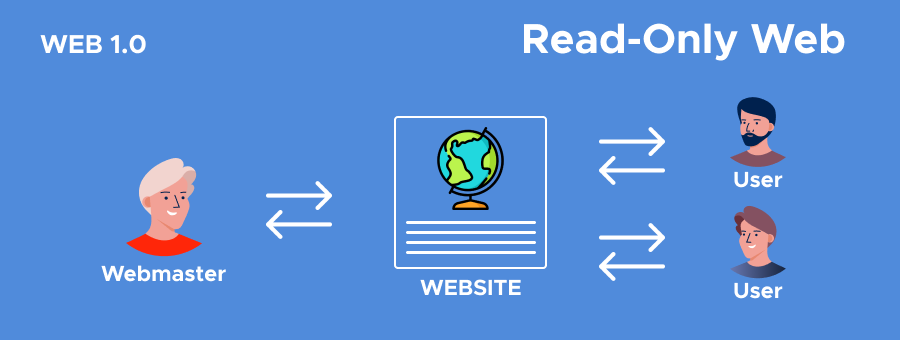

Línea del Tiempo Evolución de la Web
Web 1.0

La Web 1.0 tiene sus inicios en la década de los 90's
Web 1.0, se le llama así al internet que solamente brindaba información y no existía interacción con el usuario.
Web 2.0
Web 2.0, es cuando el usuario final puede interactuar con el contenido en internet por medio de redes sociales, e incluso crearla por medio de Blogs.
Web 3.0
Web 3.0, no es más que una evolución de la anterior con la inclusión de bases de datos, empuje de tecnologías de inteligencia artificial, web 3D, y muy importante ahora, la adaptación para diferentes tamaños de pantallas de dispositivos móviles.
Web 4.0
Web 4.0, esta versión es en la que estamos entando ahora donde sus principales servicios son: la información de búsqueda personalizada, el internet de las cosas, cloud computing y big data.
Regresar al inicio